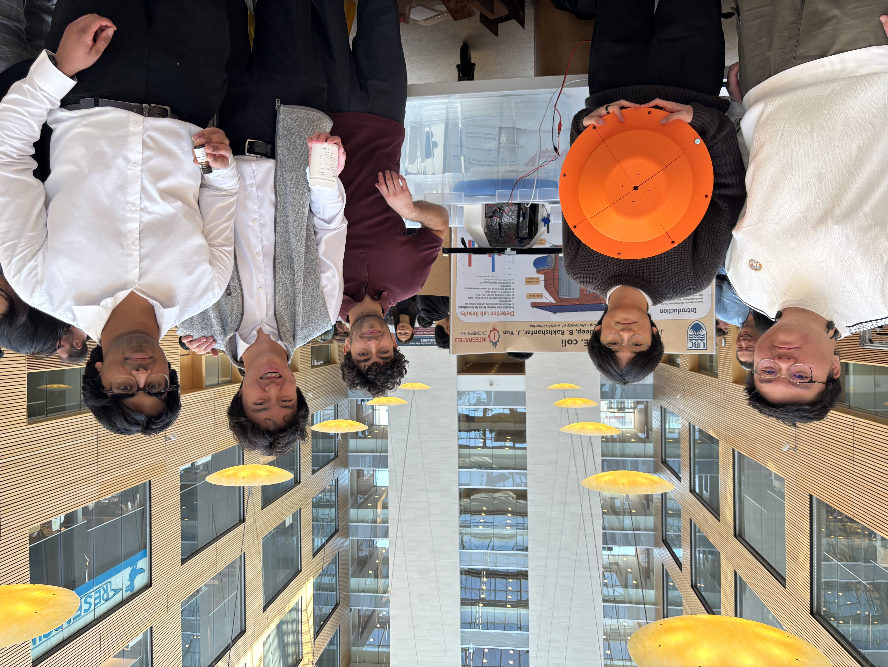
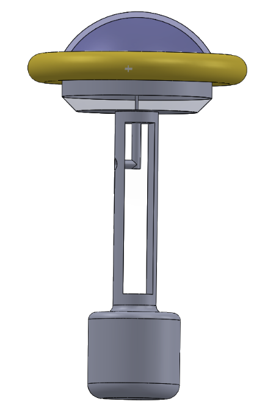
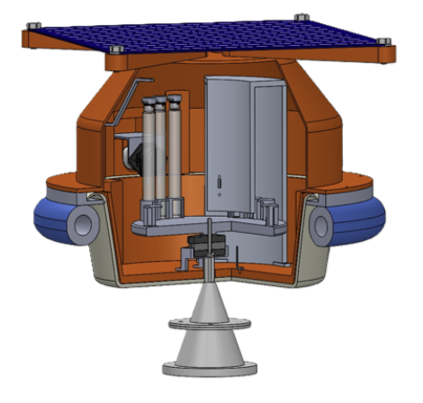
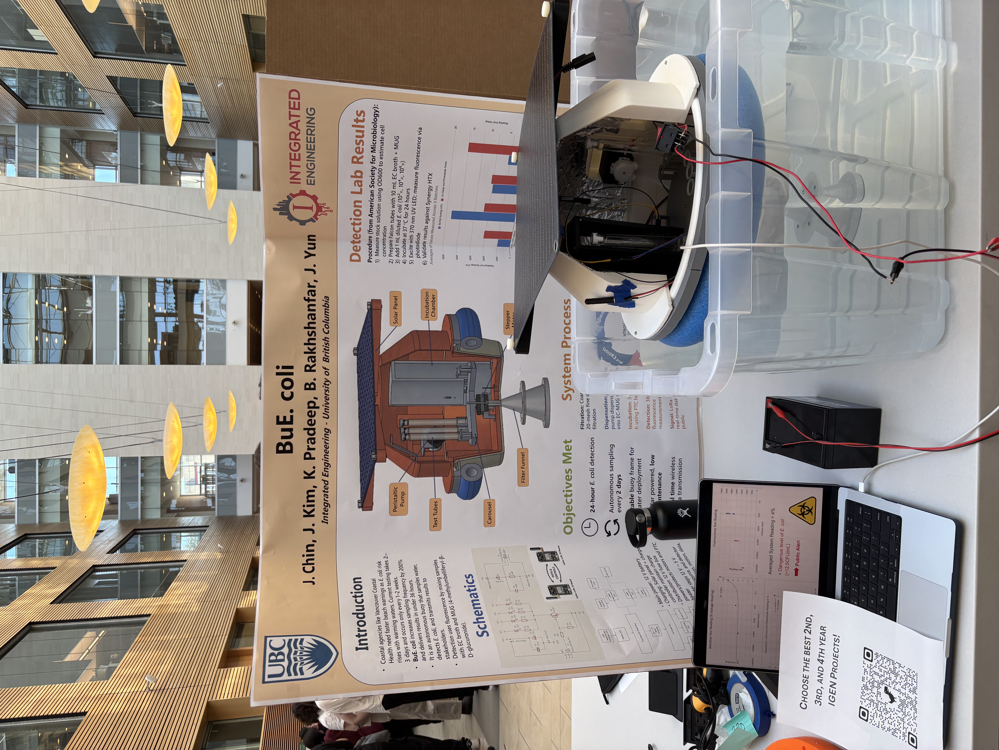
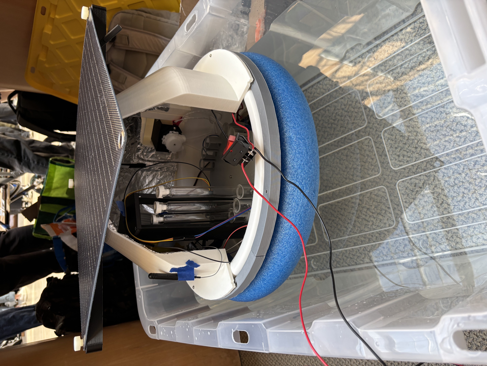
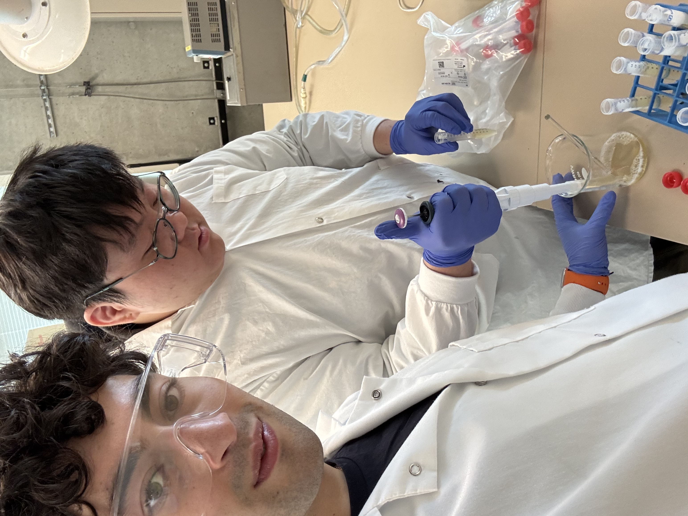
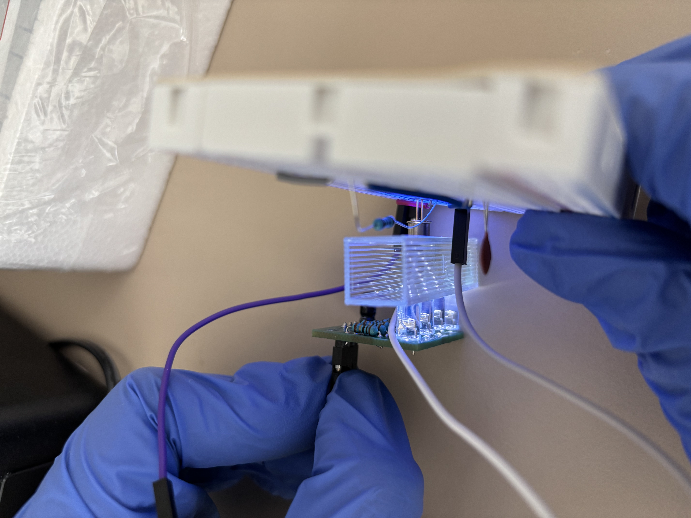

Sept 2025 - April 2026 | UBC iGEM, Best 3rd Year Project
BuE. coli was our UBC 3rd year iGEM capstone, which won Best 3rd Year Project: an automatic E. coli detecting buoy. It was designed to automatically collect, incubate, test, and remotely transmit water-quality data to stakeholders such as Vancouver Coastal Health.
During the summer, Metro Vancouver generally collects beach water samples once a week for laboratory E. coli testing. The culture-based Colilert-18 method requires approximately 18 hours of incubation, meaning results may not reflect rapidly changing water conditions caused by rainfall, runoff, sewage contamination, wildlife, tides, and other environmental factors. Our goal was to create a system capable of automatically collecting and testing samples every day, providing more frequent information without requiring manual sampling.
On the mechanical team, I designed and built the buoy casing/frame and incubation system. A major challenge was fitting the mechanical, electrical, and detection systems inside a compact enclosure while maintaining stability and protecting components from water. My mechanical work included designing and 3D modelling the buoy frame, lid, internal mounting system, heat-insert placements, and component brackets, and designing for stability and flotation under the full system load. I also created a closed-loop heating system using a PTC heating element and thermistor to maintain samples at approximately 37°C during the 24-hour incubation period, and designed and tested custom test-tube caps to prevent leakage from vibration and tilting.
Testing and iteration were also a major part of the work. I tested the buoy under load and verified its stability against small waves, vibration, and pump forces while continually updating the mechanical design as other subsystems developed.
I was also responsible for researching rapid E. coli detection methods, comparing qPCR, bacterial culturing, microfluidics, and fluorescence-based detection before selecting a fluorescence method developed by the American Society for Microbiology. This involved incubating E. coli samples in EC MUG broth and using 365 nm UV light and a photodiode to measure fluorescence. During final lab testing, our sensor readings successfully followed trends between higher and lower E. coli concentrations, which we compared against qPCR testing of the same samples.
Our final prototype combined water intake and filtration, sample dispensing, incubation, fluorescence detection, remote data transmission, solar-assisted power, and a floating mechanical platform into one system.






